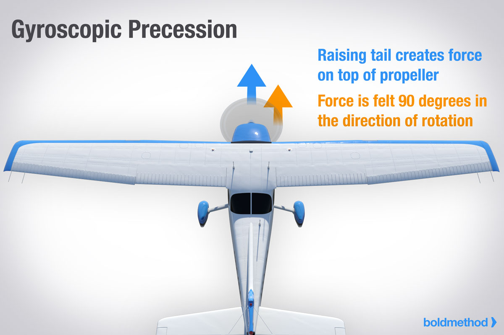

Torque and P-Factor To the pilot, “torque” (the left turning tendency of the airplane) is made up of four elements that cause or produce a twisting or rotating motion around at least one of the airplane’s three axes. These four elements are:

3. Gyroscopic action of the propeller
Before the gyroscopic effects of the propeller can be
understood, it is necessary to understand the basic principle
of a gyroscope. All practical applications of the gyroscope
are based upon two fundamental properties of gyroscopic
action: rigidity in space and precession. The one of interest
for this discussion is precession.